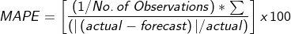
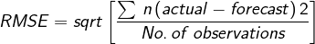

Extrapolation
Purpose :Enable users to create a forecast by identifying trends and seasons from historical time series data entered by the user in the 'Data Entry and Adjustment' screen. Several statistical extrapolation options are available and will be described below. Extrapolations from consumption data are made on a planning unit-by-planning unit basis.
Using this screen:
1.Getting started on extrapolation:
- Before you use this screen, please ensure you have completed the 'Data Entry and Adjustment' screen for each planning unit and region you would like to extrapolate
- Use the filters at the top of this screen to select the planning unit, region to extrapolate, and date range for historical data to utilize.
- The user may select one -or several of the extrapolation methods available in QAT, as appropriate to the general consumption pattern and available data, as will be discussed below. See sections 2-4 below for an explanation of the extrapolation methods and how to best choose methods for your forecast.
- Note that changes in this screen are optional - QAT automatically applies the default extrapolation parameters to all planning units after the Adjustments screen has been completed. The user then makes the final forecast selection in the 'Compare and Select Forecast' screen.
2.Extrapolation methods available in QATForecast methods in QAT are organized from simple to sophisticated.
- Moving Average: Moving average is an average that moves along time, dropping older data as it incorporates newer data. For QAT to calculate the moving average, enter the number months in the past that you would like to use in the calculation of the average.
The user may select any positive integer for this field. Entering 5 for example would mean
that the projection for the next month in the series would be the average of the preceding
five months average. This method is most useful for short-term forecasts and is sensitive
to trends. It is not appropriate for seasonal data
- Semi-Averages:Semi-average estimates trends based on two halves of a series. QAT
divides the actual data into two equal parts (halves) and the arithmetic mean of the values
of each part (half) is calculated as the y values of two points on a line. The slope
of the trend line is determined by the difference between these y values over time as
defined by the difference of the midpoints of the two halves of the series, or x values,
of the points. This method is sensitive to trends and useful for short- and medium-term
forecasts but is not appropriate for seasonal data.
- Linear Regression: Linear regression models the relationship between two variables
by fitting a linear equation to observed data. Confidence interval : between 0% and 100%
(exclusive) e.g. 90% confidence level indicates 90% of possible future points are to fall
within this radius from prediction represented by the regression line. This method is not
appropriate for seasonal data.
- Triple Exponential Smoothing (Holt-Winters): In statistics, different types of
smoothing are used to filter out the noise so that we can see patterns in a time series
dataset more clearly. Exponential smoothing uses older data at exponentially decreasing
weights over time. Smoothing parameters in exponential smoothing are set between 0 and 1,
with values close to 1 favoring recent values and values close to 0 favoring older values.
Users utilizing triple exponential smoothing can choose from four parameters:
- alpha, applies to the level or baseline of the dataset. Higher alpha values give more weight to the more recent data
- beta, determines how strongly recent trends should be valued as compared to older trends
- gamma, reflects the seasonal component of the forecast. Seasonal generally refers to repeating patterns within a year. The higher the gamma, the more weight will be applied to the most recent seasonal component of the data.
- Seasonality: In QAT, a season can be described as the expected length (in months) of any repetitive pattern in the consumption
- Confidence interval: between 0% and 100% (exclusive) e.g. 90% confidence level indicates
90% of future points are to fall within this radius from prediction.
- ARIMA: ARIMA modeling enables two statistical models designed for stationary time
series to be integrated and applied to non-stationary time series, that is, time series
that have trends or seasons. It is often applied to short term forecasts. Auto-regressive
means each point in the regression is influenced by its previous values and moving
average implies that each point is an average, a linear combination of one or more
adjacent points. Both the auto-regression and the moving average are integrated together
to fit a best model for the series through differencing, or literally using the
difference between points on a time series for the analysis instead of the raw values.
ARIMA models have three parameters:
- p or AR (lag order): the number of lag observations in the model
- d or I (degree of differencing): the number of times that the raw observations
are differenced. This value is normally 1 (if there is a trend) or 0 (no trend).
Other higher values are possible but not expected.
- q or MA (order of the moving average): the size of the moving average window or
the number of differenced observations to be averaged.
- QAT’s default values for ARIMA parameters are p = 0, d = 1, q = 1.
- Confidence interval: between 0% and 100% (exclusive) e.g. 90% confidence level
indicates 90% of future points are to fall within this radius from prediction.
3.Which extrapolation method should I use?
Below are some considerations for selecting a forecast method. Forecast
methods in QAT are organized from simple to sophisticated. In general,
- More sophisticated models are more sensitive to problems in the data
- If you have poorer data (missing data points, variable reporting rates,
12 months of data), simpler
forecast methods are recommended
The choice of extrapolation method depends on the expected pattern in
the data. Some typical patterns include:
- Stationary, where the range of observed values over time hover around an
average. Models applied to such datasets may include
- Trending with no seasonal component, where the observed values have an
increasing or decreasing trend. Models applied to such datasets may include
- Semi-averages
- Linear Regression
- Trending and Seasonal, where the observed values in a dataset have both
trend and seasonal components. Models applied to such datasets may include
- ARIMA Model
- Triple Exponential Smoothing (Holt-Winters)
-
Seasonal without trend, where the observed values have a seasonal component
but no trend. Models applied to such datasets may include
- Triple Exponential Smoothing (Holt-Winters)
The models suggested
here are neither exhaustive nor exclusive. QAT enables the user to
apply a variety of extrapolation methods and then to compare them
using best fit or forecast error metrics.
The second step is to consider whether the forecast values are expected to
reflect closely the historical patterns in your data and so whether you will
use the error metrics to inform your selection. However, when choosing to
disregard the error metric, it will be important to document your rationale
for doing so to inform discussions or reviews of your forecast and to help
future forecasters to support their decisions.
4.How do I interpret errors?
QAT automatically calculates forecast error metrics using several
methods. These include:
- MAPE (Mean Absolute Percentage Error): can be interpreted as the average percentage
difference between predictions and their intended targets in the dataset. For example, if
MAPE is 15% then your predictions are on average 15% away from the actual values.

- WAPE (Weighted Absolute Percentage Error): WAPE is an appropriate metric for when the
dataset used has low or intermittent values. A WAPE percentage of 5 means that the
forecast was off by 5% over the entire dataset for a certain evaluation period. Depending on
the use case, it is recommended to choose a model that gives the least WAPE value.

- RMSE (Root Mean Squared Error): RMSE can be interpreted as the average error that the
model's predictions have in comparison with the actual, with extra weight added to larger
prediction errors. Generally, the closer RMSE is to zero, the more accurate the model.

- MSE (Mean Squared Error): MSE is the aggregated mean of the squared difference between
the actuals and predictions. Large errors are highlighted due to this squaring. MSE is useful
when working on models where occasional large errors must be minimized. Generally, the
closer it is to 0, the more accurate the model.

- R 2 (the squared correlation between the dependent variable and the fitted values):
R 2 = 1 - [sum squared regression (SSR) / total sum of squares (SST)], where the sum
squared of the residuals for the regression (SSR) is the sum of its residuals squared, and the
total sum of squares (SST) is the sum of the distance the data is away from the mean, all
squared. The R 2 value is always a number between 0 and 1. R 2 is a measure the fit of a
regression line to a series of historical observations with values closer to 1 indicating a
stronger correspondence between the actual and predicted (regression model) values. It is
not a measure of error and should not be used by itself to assess the fitness of a prediction,
but in combination with other error metrics and the user's knowledge of the program.

Apart from R 2 the lower the score, the more closely the forecast method result fits the historical
data. In models where historical patterns in a data set are expected to be reflected in the future
values, a low error value could be used to help select a preferred extrapolation method, and QAT
will highlight these best fits in a table. However, if substantial changes which do not fit the historical
data are anticipated, the best fit extrapolation may not be the most appropriate forecast to select.
To make the best selection between extrapolation methods for your purpose,
the most important thing is first understanding which method of
extrapolation is most appropriate for the expected pattern in the data.
Forecast methods in QAT are organized from simple to sophisticated. In
general,
- More sophisticated models are more sensitive to problems in the
data
- If you have poorer data (missing data points, variable reporting
rates, 12
months of data), simpler forecast methods are recommended
The
second step is to consider whether the forecast values are
expected to reflect closely the historical patterns in your
data and so whether you will use the error metrics to inform your
selection. However, when choosing to disregard the error metric,
it will be important to document your rationale for doing so to
inform discussions or reviews of your forecast and to help
future forecasters to support their decisions.
Note : You have 0 months of acutal consumption data. The minimum values needed
for the various features are below:
* TES, Holt-Winters: At
least 24 months of actual consumption data
* ARIMA: At least 14 months of actual consumption data
* Moving Average, Semi-Averages, and Linear Regression: At
least 3 months of actual consumption data
|